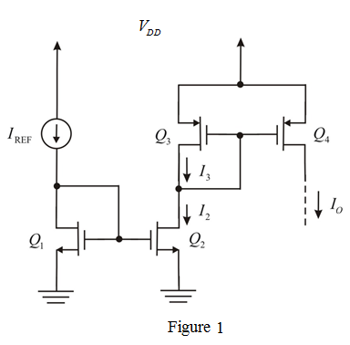
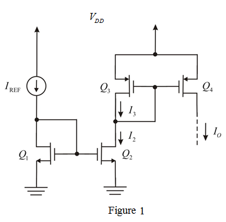

Refer to Figure P7.50 in the textbook for the circuit.
Redraw the circuit by representing currents  and
and  as shown in Figure 1.
as shown in Figure 1.

Refer to Figure P7.50 in the textbook for the circuit.
Redraw the circuit by representing currents and as shown in Figure 1.

The current reference is applied at the drain terminal of transistor .
From the circuit, the drain and gate terminals of  are connected, which pushes the transistor
are connected, which pushes the transistor  into saturation region.
into saturation region.
The gate voltage of transistor  is same as gate voltage of transistor
is same as gate voltage of transistor 
Hence transistors  and
and  acts as current mirror network
acts as current mirror network
The current flowing in the drain terminal of transistor  is
is  .
.
The relation between and is,
Here, indicates transistor aspect ratio.
The current flowing in the transistor  is
is  .
.
From the circuit diagram, the drain voltage of transistor  is equal to gate voltage of transistors
is equal to gate voltage of transistors  and
and  which in turn drives the transistor into saturation region.
which in turn drives the transistor into saturation region.
Since the current flowing into the gate of the MOSFET is zero, the current  is,
is,
Hence transistors  and
and  acts as current mirror network
acts as current mirror network
Relation between and is,
Substitute  for
for  in the equation.
in the equation.
Substitute for  in the equation.
in the equation.
Thus, the output current of the circuit in terms of reference current  is, .
is, .